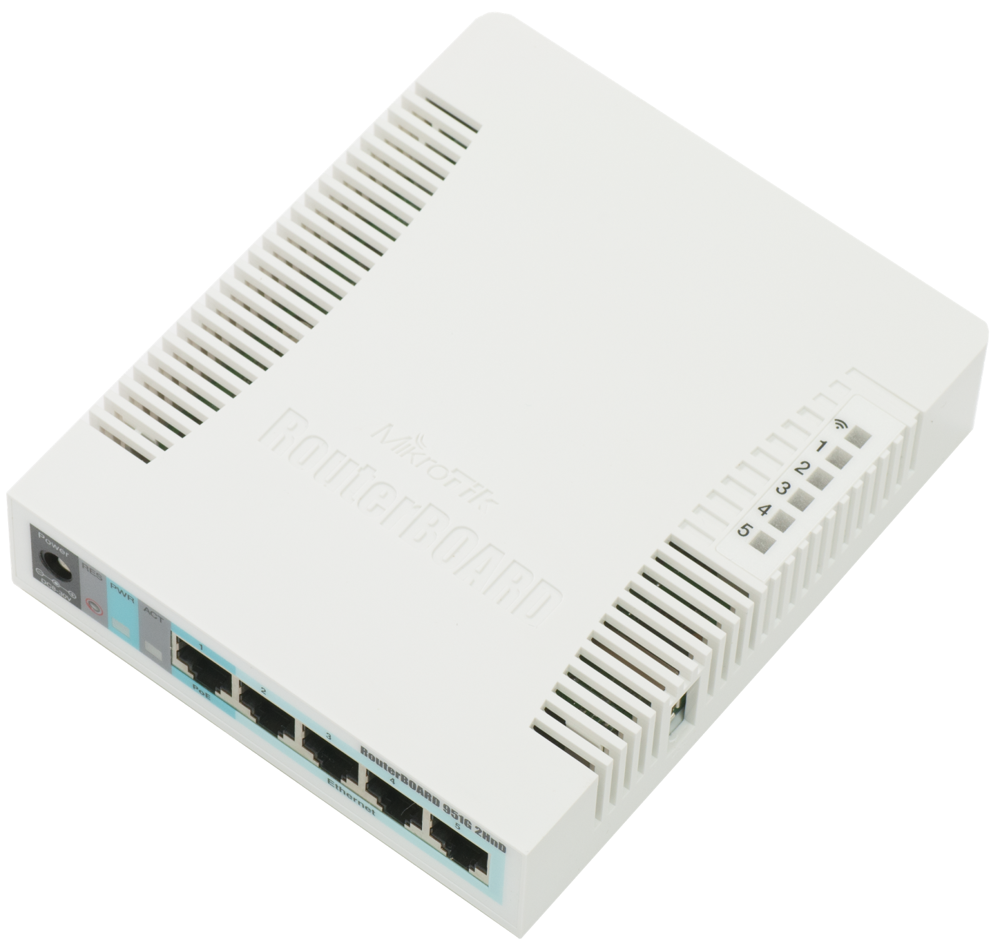

Коллеги с прошлой работы обратились за помощью. В одном удалённом офисе начались проблемы со связью, исправить которые провайдер не смог. В результате этот офис подключили к другому провайдеру. С предыдущим провайдером использовался DSL-модем, а компьютеры удалённого офиса подключались к центральному офису через индивидуальные подключения PPTP. Новый провайдер предоставляет услуги по Ethernet и поэтому DSL-модем нужно было заменить на что-то другое. В качестве замены они выбрали маршрутизатор MikroTik RB951G-2HnD, планируя заменить PPTP-подключения от каждого компьютера на общий туннель IPSec.
Не вдаваясь в детали, скажу что в центральном офисе установлен сервер под управлением Debian Squeeze, с которым и нужно было объединить MikroTik туннелем IPSec. На самом деле офис этот тоже не совсем центральный и имеется большой набор ресурсов, который доступен через каналы в вышестоящие локальные сети. Список используемых удалённым офисом ресурсов непостоянен, а потому стандартная настройка IPSec с шифрованием трафика между заранее известными сетями нам не подойдёт. В данном случае нужно считать, что за центральным офисом как бы находится сеть 0.0.0.0/0. В удалённом же офисе используется сеть 192.168.81.240/28.
Если изобразить это схематично, то получится такая схема:
[0.0.0.0/0] --- 192.168.81.1 debian 11.11.11.11 ==== 22.22.22.22 mikrotik 192.168.81.241 --- [192.168.81.240/28]
Этот раздел можно безболезненно пропустить. Здесь я просто дал волю своей графомании и описал, какой ценой мне достался этот рецепт. Можете считать меня неудачником :)
Как ни странно, но сходу настроить даже тестовую конфигурацию мне не удалось. Туннель упорно не хотел подниматься и трафик не шёл. Стало понятно, что взять эту задачу нахрапом не получится. Маршрутизатор отдали мне на растерзание домой. Дома у меня есть коммутатор с поддержкой VLAN и компьютер, на котором я думал настроить необходимое количество виртуальных машин и соединить всё это между собой, собрав этакий виртуальный стенд.
В первый выходной я потратил на всё это безобразие около 9 часов и всё-таки поднял туннель, соединив внешний интерфейс маршрутизатора с внешним интерфейсом виртуальной машины под управлением Debian:
debian 11.11.11.11 === 11.11.11.12 mikrotik
Я, правда, так и не понял, чем настроенная конфигурация отличалась от той, которую я пытался настраивать первоначально. И так много времени ушло в этот раз скорее не на саму настройку, а на подготовительные работы - проброс VLAN, поиск нормально работающей системы для запуска виртуальных машин (воспользовался VirtualBox), её правильную настройку (нужно было собрать дополнительные модули для ядра Linux), скачивание и установку в виртуальную машину Debian Squeeze. Дополнительное время ушло на тупление с мостовым интерфейсом, который я настроить-настроил, а поднять забыл.
Ещё некоторое время было потрачено из-за моей невнимательности, когда IPSec стал требовать вдруг шифрования трафика и на локальном интерфейсе, в результате чего я потерял управление и мне пришлось сбрасывать MikroTik и настраивать его снова. Зато я узнал о существовании "безопасного режима" в RouterOS.
Наконец, после установки первоначального туннеля я потратил ещё некоторое время на шлифование конфигурации.
Во второй выходной я уже попытался воссоздать будущие условия работы маршрутизатора более точно. Сначала настроил такую схему, с дополнительной виртуалкой, которая изображала сеть провайдера и маршрутизировала трафик между Debian и MikroTik'ом:
debian 11.11.11.11 ==(провайдер)== 22.22.22.22 mikrotik
Далее я настроил ещё две виртуальные машины, каждая из которых изображала компьютер в офисе. Одна виртуальная машина изображала компьютер в центральном офисе, а вторая - в удалённом офисе. Получилась уже такая схема:
[192.168.80.113/24] --- 192.168.81.1 debian 11.11.11.11 ==(провайдер)== 22.22.22.22 mikrotik 192.168.81.241 --- [192.168.81.242/28]
Далее я потратил ещё некоторое время на тестирование настроек при включенном NAT на Debian. Дело в том, что NAT изменяет адрес отправителя (что ожидаемо - для этого он и предназначен). Из-за этого пакет с изменившимися IP-адресами отправителя и получателя может не попасть под правила IPSec и уйти не в удалённый офис через туннель IPSec, а уйти прямо в сеть провайдера безо всякого шифрования. Этот момент тоже нужно учитывать, чем я и занялся.
В результате получилась отлаженная конфигурация. Я настроил реальный сервер Debian и передал настроенный маршрутизатор своим бывшим коллегам. Были, правда, некоторые сомнения в том, что я всё учёл. Но, как это ни странно, когда маршрутизатор установили на место, всё сразу заработало как нужно. Полученный рецепт привожу ниже.
Для настройки туннеля я выбрал алгоритм шифрования blowfish, алгоритм хэширования sha1 и группу Дифи-Хеллмана, исходя из желания достичь наибольшей защищённости, поддерживаемой программным обеспечением с обеих сторон туннеля.
Перед настройкой укажу на особенность настраиваемого IPSec-туннеля. У этого туннеля нет IP-адресов конечных точек внутри туннеля. Фактически, IPSec хватает пакеты перед выходом из сетевого интерфейса, выполняет шифрование пакета и кладёт в IP-пакет, в котором указаны "белые" IP-адреса обеих сторон туннеля. Чтобы этот процесс не зациклился и пакеты не продолжали шифроваться и вкладываться снова и снова, IPSec'у чётко указываются правила, пакеты с какими IP-адресами необходимо подвергать обработке. Из-за такой особенности кажется весьма необычным, что пакеты с локальными IP-адресами маршрутизируются прямо через провайдерскую сеть. Очень важно понимать эту особенность, т.к. в противном случае при настройке IPSec можно натурально сойти с ума :)
Устанавливаем необходимые пакеты:
# apt-get install ipsec-tools racoon
Прописываем настройки racoon в файле /etc/racoon/racoon.conf:
remote 22.22.22.22 {
nat_traversal off;
exchange_mode main;
proposal {
encryption_algorithm blowfish;
hash_algorithm sha1;
authentication_method pre_shared_key;
dh_group modp6144;
}
}
sainfo anonymous {
pfs_group modp6144;
lifetime time 1 hour;
encryption_algorithm blowfish;
authentication_algorithm hmac_sha1;
compression_algorithm deflate;
}
При помощи утилиты pwgen из одноимённого пакета генерируем случайный будущий общий ключ:
$ pwgen 32
Помещаем ключ в файл /etc/racoon/psk.txt:
22.22.22.22 generated_psk_sequence
Настроим ipsec, отредактировав файл /etc/ipsec-tools.conf
flush;
spdflush;
spdadd 192.168.81.240/28 192.168.81.240/28 any -P out none;
spdadd 0.0.0.0/0 192.168.81.240/28 any -P out ipsec
esp/tunnel/11.11.11.11-22.22.22.22/require;
spdadd 192.168.81.240/28 192.168.81.240/28 any -P in none;
spdadd 192.168.81.240/28 0.0.0.0/0 any -P in ipsec
esp/tunnel/22.22.22.22-11.11.11.11/require;
Запустим настроенные демоны:
# /etc/init.d/setkey start # /etc/init.d/racoon start
Добавляем маршруты в удалённую локальную сеть через внешний интерфейс:
# ip route add to 192.168.81.240/28 via 11.11.11.11 src 11.11.11.11
Добавляем правила в пакетный фильтр для прохождения трафика IPSec:
# iptables -A INPUT -i eth0 -m udp -p udp -s 22.22.22.22 --dport 500 -j ACCEPT # iptables -A INPUT -i eth0 -p ah -s 22.22.22.22 -j ACCEPT # iptables -A INPUT -i eth0 -p esp -s 22.22.22.22 -j ACCEPT
Добавляем правила в пакетный фильтр для трафика из сети удалённого офиса к серверу Debian:
# iptables -A INPUT -i eth0 -s 192.168.81.240/28 -p tcp -m multiport --dport 25,53,80,110,143,3128 -j ACCEPT # iptables -A INPUT -i eth0 -s 192.168.81.240/28 -p udp -m udp --dport 53 -j ACCEPT
Если на внешнем интерфейсе осуществляется трансляция адресов, то сеть, доступную через туннель IPSec, нужно исключить из обработки. Ниже приведены два правила - первое исключает сеть из обработки, второе осуществляет трансляцию адресов остального трафика:
# iptables -t nat -I POSTROUTING -o eth0 -d 192.168.81.240/28 -j ACCEPT # iptables -t nat -A POSTROUTING -o eth0 -j SNAT --to-source 11.11.11.11
Внимание! Указанные ниже команды приведены для примера. Будьте внимательны и не копируйте их прямо в командную строку. Прежде чем выполнять любые примеры команд remove для начала проверьте при помощи команды print, что вы собрались удалить. Внимательно проверяйте IP-адреса и вообще - делайте что-то только если вы чётко представляете, зачем вы это делаете.
Добавляем новый адрес на локальном интерфейсе:
/ip address add interface=ether2-master-local address=192.168.81.241/28
Удаляем старый адрес 192.168.88.1, который был настроен на мостовом интерфейсе в конфигурации по умолчанию:
/ip address remove numbers=0
Переподключаемся на новый адрес, удаляем мостовой интерфейс:
/interface bridge remove numbers=0
Удаляем настройки DHCP-клиента на внешнем интерфейсе:
/ip dhcp-client remove numbers=0
Настраиваем новый внешний адрес:
/ip address add interface=ether1-gateway address=22.22.22.22/25
Настраиваем маршрут по умолчанию:
/ip route add gateway=22.22.22.1
Удаляем настройки NAT:
/ip firewal nat remove numbers=0
Удаляем правила пакетного фильтра:
/ip firewall filter remove numbers=0,1,2,3,4,5
Отключаем доступ к устройству по всем протоколам, кроме ssh:
/ip service disable numbers=0,1,2,5,6,7
Отключаем MAC-telnet (телнет с подключением по MAC-адресу, а не по IP-адресу):
/tool mac-server disable numbers=1,2,3,4,5,6
Теперь переходим к собственно настройке IPSec.
Настраиваем предпочитаемые алгоритмы аутентификации, шифрования и обмена ключами:
/ip ipsec proposal set default auth-algorithms=sha1 \ enc-algorithms=blowfish \ lifetime=1h \ pfs-group=modp6144
Настраиваем политику, какой трафик шифровать:
/ip ipsec policy add src-address=192.168.81.240/28 dst-address=192.168.81.240/28 \ sa-src-address=22.22.22.22 sa-dst-address=11.11.11.11 \ tunnel=no action=none add src-address=192.168.81.240/28 dst-address=0.0.0.0/0 \ sa-src-address=22.22.22.22 sa-dst-address=11.11.11.11 \ tunnel=yes action=encrypt proposal=default
Настраиваем, с кем нужно установить соединение IPSec:
/ip ipsec peer add address=11.11.11.11/32 local-address=22.22.22.22 port=500 \ auth-method=pre-shared-key secret="generated_psk_sequence" dh-group=modp6144 \ enc-algorithm=blowfish hash-algorithm=sha1 \ lifetime=1h nat-traversal=no